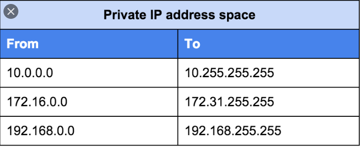

Que) If IPv4 is outnumbered then why we still able to use it? It's because of technology named Network Address translation(NAT). We use private IP address and share it with all our devices and use a single IP to communicate from outer world.
The way NAT works is when a corporate computer with a private IP address sends a packet to a public IP address outside the corporate network, it first goes to the NAT device. The NAT notes the packet’s source and destination addresses in a translation table.
The NAT changes the source address of the packet to the public-facing address of the NAT device and sends it along to the external destination. When a packet replies, the NAT translates the destination address to the private IP address of the computer that initiated the communication. This can be done so that a single public IP address can represent multiple privately addressed computers.
When will IPv4 be “shut off”?
Most of the world “ran out” of new IPv4 addresses between 2011 and 2018 – but we won’t completely be out of them as IPv4 addresses get sold and re-used (as mentioned earlier), and any leftover addresses will be used for IPv6 transitions.
There’s no official switch-off date, so people shouldn’t be worried that their internet access will suddenly go away one day. As more networks transition, more content sites support IPv6 and more end users upgrade their equipment for IPv6 capabilities, the world will slowly move away from IPv4.
Conclusion Ek Org ek public ip leti hai(IPv4)(for router) fir using NAT apne andar private ip de deti hai.....jiski wo subnetting bhi kar sakti hai One other way is to use IPv4 wisely by Subnetting? Subnetting allows you to create multiple logical networks that exist within a single Class A, B, or C network. If you do not subnet, you are only able to use one network from your Class A, B, or C network, which is unrealistic.
The organizations that distribute IP addresses to the world reserves a range of IP addresses for
private networks
.
 Scenerio : A company goes to buy an IP address let's say he got Class C IP address(254 Hosts) but let say it has only 10 PC so rest 244 is wasted Class C Subnetting